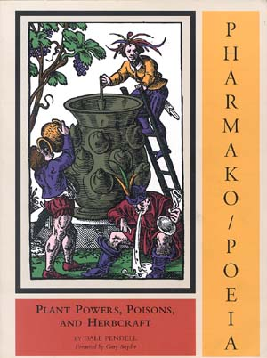

|
 |
Il capitolo Salvia divinorum di Dale Pendell |
(altre informazioni nel sito di Daniel Siebert)
Dale Pendell ha gentilmente acconsentito di condividere con noi questo capitolo; il capitolo Salvia divinorum tratto dal suo libro straordinario: Pharmako/Poeia: Plant Powers, Poisons, and Herbcraft. Pubblicato da Mercury House, San Francisco, 1995. Per informazioni su come ordinarli, vai QUI
"un poema epico sugli umori delle piante, un astruso trattato alchemico, un gioco di costruzioni ad incastro di narrativa sperimentale, un testo di riferimento sulla natura incontaminata, in peana comico alla coscienza cosmica, un manuale ecologico, un pastiche di erbe essiccate, un'enciclopedia controcultura di antichi fatti e tradizioni."
"Dale Pendell riattiva le antiche connessioni tra il poeta bardo e lo sciamano."
_________________________________________________________________________________________________________
Nomi comuni:
Salva dell'oracolo, ska Pastora, hojas de la
Pastora, salvia del veggente, la Maria.
Salvia splendens contiene salviarina e splendidina, entrambi diterpeni, e potremmo aspettarci anche di più da altre specie .Non si è registrata attività psicotropica per questi diterpeni, ma il caso è ancora aperto. Salvia sonomensis contiene una sostanza, simile alla canfora, che è leggermente stimolante quando è fumata. Salvia officinalis contiene thujone, che in alcune varietà costituisce più del 50% dell'olio essenziale.
Tassonomia:
E' una vera salvia, come la salvia da cucina,
famiglia della Menta. Ci sono migliaia di specie in questo genere e 500
specie nel sub-genere neotropico Calosphaceae, a cui appartiene
la Salvia divinorum. Molte specie temperate di Salvia spp.
si sono adattate alle condizioni xeriche (umide) come la salvia "nera"(Salvia
mellifera), la salvia "bianca" (Salvia apiana) e la salvia porpora
(Salvia
leucophylla) del chaparral Californiano. Salvia divinorum è
una idrofita.
La Pianta:
Dal fusto squadrato, con margini alati, steli
cavi e succulenti, cresce oltre gli otto piedi (più di 2,5 m.) se ha un
sostegno. Di solito i getti ricadono al suolo e radicano a contatto del
terreno. Rami ausiliari si sviluppano facilmente dei nodi. La pianta fiorisce
quando le giornate si accorciano, con lunghi racemi di fiori bianchi, dal
calice color lavanda scuro. Io spargo questi i fiori dentro le insalate.
L'Alleata:
Può essere timida. talvolta deve imparare a
conoscerti per un po' di tempo, prima di venire fuori a dirti ciao. Ma
quando appare, c'è qualcuno di più diretto?
Parti Usate:
Le foglie. Gli steli si possono succhiare.
Come Prenderla: Il Sentiero di Foglie:
Tredici paia di foglie, il cui dorso sia disposto
nella medesima direzione, vengono arrotolate in forma di sigaro e mangiate.
Questo è il metodo tradizionale, il modo in cui la prendono i Custodi
della Pianta, i Mazatechi. Le foglie si usano con lo stesso rituale dei
funghi, con candele (messe fuori più tardi), preghiere e canti. La cerimonia
si compie di notte, in una stanza buia. Più è buia, meglio è E più
è silenziosa, meglio è sia la luce che il rumore portano a far svanire
l'esperienza
Non è infrequente per i Mazatechi sciacquarsi la bocca dalle foglie masticate con un sorso di Tequila. Il liquore pulisce il palato e può aiutare l'assorbimento finale.
Chimica:
Sconosciuta sino a poco tempo fa, siamo ancora
lontani dall'averla compresa. Nel 1982, Alfredo Ortega e i suoi colleghi
isolarono un diterpene biciclico, C23 H28O8,
da materiale raccolto in Oaxaca e lo chiamarono salvinorin. Un altro
gruppo di studiosi, condotto da Leander Valdes presso l'Università del
Michigan, indipendentemente isolò lo stesso composto , che chiamarono
divinorum.
Giacché Ortega pubblicò per primo, il nome salvinorin
ebbe precedenza.
Nessun autore saggiò salvinorin sugli esseri umani, ma recenti test di
Daniel Siebert e altri, me incluso, hanno provato la psicoattività di
salvinorin oltre ogni dubbio.
Altri composti delle foglie fresche possono agire sinergicamente, creando lo straordinario e variabile effetto della pianta, forse per inibizione dell'azione litica di qualche enzima o dei succhi digestivi.
La Pianta:
E' come le zampe del gatto, morbide zampe di gatto che premono, o come un mucchio di lingue d'uccello che lambiscono la mente. O come dita minuscole, come le dita dell'edera che cerca di scalare un muro. ..
"Lingue d'uccello lambiscono la mente." Le abbiamo cronometrate: battono 4 o 5 volte al secondo. Può essere il ritmo theta.
Cinque o sei piccole boccate non producono lo stesso effetto di un tiro profondo. Questa ragione non è molto chiara. Forse il cervello reagisce a salvinorin in solo una questione di secondi, con difese neurochimiche.
La tecnica migliore è usare la tecnica Val Salva, cominciando con lo svuotare dall'aria i polmoni e poi farvici propagare il fumo finché i polmoni non siano completamente pieni. Poi tenervi dentro il fumo fin che si può Espirare pian piano
L'Alleata: il Ponte di Fumo:
Spesso si ha pochissimo effetto dai primi meetings
con le foglie. Il loro potere sembra avviarsi pian piano verso un climax
nelle successive ingestioni. Diaz fu il primo a documentare questo fenomeno.
Egli bevve il succo delle foglie fresche per 6 volte e si rese conto di
una "accresciuta consapevolezza del potere della pianta" da una volta all'altra.
Al contrario, talvolta l'alleato sconvolge e sbriciola una persona senza preavviso, alla prima visita. E un po' di gente sembra completamente immune in permanenza.
Effetti: il Ponte di Fumo:
Per diverse settimane, tutto attorno a me diventava gradualmente più intelligente.
Salvia divinorum non contiene alcaloidi. Negli screening per testare la psicoattività delle piante, quelle che non contengono alcaloidi sono gettate via di routine. Chiaramente quest'approccio è troppo rozzo.
Causa la quantità di materiale che bisogna ingerire perché la salvia del veggente sia pienamente attiva, mi parve, in un momento di lucidità che qualsiasi pianta potesse essere enteogena, se se ne dovessero mangiare 26 foglie intere per volta. E' uno scherzo, ma non puoi rendertene conto finché non provi tu stesso a mangiare veramente la salvia del profeta.
La Pianta:
La pianta è messa in pericolo dalle forze della religione imperialistica, da 400 anni e forse più !
Che proprio una pianta dall'aspetto tanto comune, dalla natura succulenta e senza nessun alcaloide, possa essere così sottile e potente come la salvia del veggente, conduce a porsi domande sulle altre piante verdi - forse ne esistono altre così Sorelle di questa salvia, e stanno solo aspettando che qualcuno presti loro il tempo e l'attenzione che si meritano.
La gente si chiede, "Se è veramente così buona, perché è così oscura, perché così in pochi ne hanno sentito parlare?" La risposta in parte è legata alla storia, in parte alle intenzioni, e in parte - forse - anche all'intrinseca natura degli effetti della pianta.
Prima di tutto, la pianta non è così oscura per il suo popolo. Essi la conoscono e l'amano, oppure la conoscono e non l'amano (qualcuno pensa che la pianta renda indemoniati) La maggior parte della nostra ("nostra " significa cultura letteraria occidentale) attuale conoscenza di Ska Pastora può essere fatta risalire alla visita da Gordon Wasson e Albert Hofmann a Maria Sabina. La maggior parte delle "nostre" piante derivano da questa trasmissione. Diversi particolari del meeting Wasson/Hofmann/Sabina fanno scontare alle piante la loro reputazione che è andata un po' in calando . Per esempio, il principale alleato di Maria Sabina erano i funghi: lei usava le piccole foglie soltanto quando i "bambini (niños)" non erano di stagione. Ma esistono altri curanderos che preferiscono le foglie ai funghi. Don Alejandro dice che prendendo i funghi troppo spesso, loro "ti renderanno pazzo," ma che la Vergine, che parla tramite le foglie, è più gentile.
Secondo, quando Hofmann tornò al suo laboratorio presso i Sandoz Pharmaceuticals in Basilea, aveva portato con sé del succo di foglie di salvia, "preservato in alcool." Quando questo succo , testato in un auto-esperimento , si rivelò ormai inattivo, Hofmann abbandonò intenzione di analizzarlo per stabilirne il principio psicoattivo. Hofmann ne dedusse che lo sconosciuto ingrediente attivo doveva essere instabile. Questa conclusione era incorretta, ma doveva contribuire a rallentare successive ricerche per qualche anno. I miei stessi rapporti sull'efficacia delle foglie secche fumate furono accantonati da un certo numero di miei colleghi .
Per quel che riguarda l'intenzione, per citare Lao Tzu: "Quelli che parlano non sanno, ma coloro che sanno non parlano" La maggior parte del popolo della salvia preferirebbe non vedere la pianta da loro amata sotto il lampo dei riflettori, oppure vederla bandita, né che se ne parli o se ne senta dire a sproposito.
per almeno 500 anni."
Ma solo perché la pianta non va alle feste, non causa nessun danno, e non se ne fa alcun abuso nei termini classici, ciò non significa che non potrebbe essere perseguitata da coloro che dominano per mezzo del terrore, se loro sapessero della sua esistenza. Per cui, riassumendo, noi ripeteremo le precedenti valutazioni attorno la pianta e concorderemo nel dire che è uno psicotropo minore di ben meritata oscurità.
L'Alleata:
Questa pianta ha il senso dello humour!!
La Pianta:
Storia:
Sembra, probabilmente,
che ska Pastora una volta fosse molto più diffusa di quanto lo è oggi.
I cultigeni generalmente hanno storie lunghe, e Salvia divinorum non dovrebbe
fare eccezione. Non è chiaro se il declino della pianta sia iniziato con
la Conquista Spagnola o se già allora fosse in declino. Se è così le
ragioni furono religiose, politiche o che altro'
Gordon Wasson ipotizzò che la Salvia divinorum fosse il pipiltzintzintli, il "Nobile Principe" menzionato nei codici Aztechi. Un problema per avvalorare concretamente quest'identificazione è che pipilzintzintli sembra avesse varietà maschili e femminili, mentre ska Pastora è botanicamente parlando, perfetta. Gli Aztechi erano esperti botanici e conoscevano la differenza tra fiori maschi e fiori femmine. Ma può anche darsi che le referenze al genere siano state metaforiche, in relazione a proprietà non anatomiche della pianta. C'è qualche riferimento conosciuto a quest'uso del genere, così Wasson potrebbe aver ragione. Sarebbe straordinario se una pianta della statura e della potenza di ska Pastora non fosse ben conosciuta dagli Aztechi.
L'Alleata:
Anch'io preferisco masticare e ingoiare, forse solo per una sensazione di pulizia e tradizione. Masticare con le guance piene mantiene il materiale in movimento e consente a tutte le parti della mucosa di stare costantemente a contatto con la foglia di salvia. Più di una volta ci è parso che fosse il picciolo (o la nervatura ?) questi stramasticati steli che alla fine mandavano tutto di traverso.
Un intrepido ricercatore ha chiamato Salvia divinorum "la pianta psichedelica con il gusto migliore che abbia mai assaggiato." Buona affermazione.
Effetti:
Gli effetti sono diversi, dipendono da quanta
pianta si ingerisce, dipendono se incontri l'Alleata sul Sentiero di Foglie
o attraversando il Ponte di Fumo. E anche se la pianta ti ha accettato.
Il che è una metafora... o no? Quale spiegazione neurochimica si può
dare ad una soglia che , una volta varcata, rimane aperta ancora per un
anno, senza che intervenga nessun'altra esposizione alla pianta? E poi,
le spiegazioni neurochimiche sono anch'esse metaforiche?
Nota che mentre il dosaggio per l'ingestione varia dalle 10 alle 30 foglie, la dose necessaria per il fumo è di 1 o 2 foglie.
L'Alleata:
Lei ha molte epifanie. Non tutte sono timide,
e non tutte sono "lei." Una persona incontrò l'Alleata sotto forma di
gigante (un gigante immensamente antico che indossava una cintura di teschi
umani. Il gigante fissò direttamente negli occhi questa persona . Voleva
sapere perché era stato evocato. E non voleva sentire una risposta banale.
La Pianta:
Ska Pastora non è un allucinogeno. Ciò non significa che non ne condivida alcune caratteristiche. Ma ci sono anche delle differenze. Gli allucinogeni veri agiscono tutti sui recettori 5-HT2. Mentre i recettori della salvia del veggente non sono stati scoperti, l'evidenza sperimentale porta a qualche nuovo recettore o a qualche inondazione olografica della mente. E mentre molti allucinogeni possono aiutare qualcuno a giocare a golf (o, come Dock Ellis ha comprovato, per i lanci di qualche squadra di baseball), una certa mancanza di coordinazione muscolare accompagna l'inebriamento da salvia.
Sul mandala Pharmako/Poeia, ho inserito le piccole foglie nel tracciato tra phantastica e inebriantia, l'ho chiamato existentia . Con existentia, non intendo nulla di Cartesiano, e nemmeno nell'ordine di David Bohm, che implica la separazione-da-se, ma intendo ciò che deriva dall'essenza.
Effetti:
Non è come l'essere sballati, è molto di più che l'essere
pratici.
Corrispondenze:
| Attività | Affari Domestici |
| Animali | Uroborus |
| Archetipo | Lettore della Fortuna |
| Forma Artistica | Poesia Lirica |
| Funzione Corporea | Circolazione |
| Parte del Corpo | Bocca |
| Reame del Buddha | Prajna Bhumi |
| Colore | Blu Cobalto |
| Entità Cosmica | Singolarità |
| Sostegno per | Indecisione |
| Dimensione | Frattale |
| Disciplina | Augure |
| Elemento | Roba Mondana |
| Forma di Energia | Mulino a Vento |
| Forma di Ignoranza | Compiacenza |
| Pietra | Tormalina |
| Geometria | Topologia |
| Divinità | La Madre di Dio |
La Pianta:
In tutta la nostra Pharmako/Poeia, questa pianta
è la perla nascosta. I Poeti, al pari dei commercianti di vino, amano
questo genere di sorprese, e le ricercano andando in esplorazione per cercare
ancora, oltre i loro fratelli e sorelle meglio conosciuti: un poeta sconosciuto
in un vecchio libro screpolato con luce nei suoi versi, un oscuro vino
pregiato che mancava ai collezionisti, coperto di polvere ma pieno di sorsate
deliziose. Le piccole foglie, nascondendosi nelle montagne, hanno con successo
evitato la prima pagina per 4 secoli.
Un saggio Taoista, su un'altra catena montuosa, dopo molti anni di segreti studi alchemici con il suo maestro, sentendosi ormai completamente istruito, discese dalla montagna per muoversi nel mondo. Quando stava per sopraggiungere la sera, si fermò in una locanda. La gente che vi era ospitata si meravigliò della luce che sembrava si librasse da lui - una sorta di bagliore magico . Il saggio s'intristì rendendosi conto che i suoi studi erano compiuti solo per metà e ritornò immediatamente presso il suo maestro.
Poesis:
Recenti studi di Aaron Reisfield (Reisfield 1993) dimostrano che Salvia divinorum non è completamente auto-sterile, come si pensava: la pianta può produrre semi fertili, sebbene molto di rado. Reisfield non trovò nessuna rilevante differenza nella produzione di semi fertili, comparando i fiori impollinati dallo stesso clone con quelli impollinatisi tra piante raccolte in differenti località Certo, è possibile che vi sia una piccola differenza genetica tra qualche specie di S. divinorum, perfino tra quelle che oggi crescono nelle aree selvagge in Oaxaca.
Le osservazioni di Reisfield suggerivano la forte possibilità che Salvia divinorum fosse un ibrido. I grani di polline di Salvia divinorum hanno perduto vitalità è un'indicazione di geni parentali disarmonici. Ma la bassa vitalità del polline è solo una causa. Perfino tramite ibridazione manuale soltanto il 2-3% dei semi matura. Aggravando ulteriormente il problema della riproduzione, in Mexico la pianta fiorisce solo sporadicamente. Per la fioritura sembra sia necessario più sole che per la crescita vegetativa ottimale, così riescono a fiorire solo le piante che crescono ai margini del loro habitat normale.
La barriera principale per la fertilità secondo Reisfield, compare dopo che il tubo pollinico ha raggiunto l'ovario. Ma egli non riuscì a stabilire se l'infertilità fosse dovuta a una depressione causata dall'ibridazione incrociata, condizione non infrequente tra le piante che hanno una lunga storia di relazioni con gli umani; ibridismo; o qualche effetto di azione ritardata per auto-incompatibilità. Se Salvia divinorum fosse veramente un ibrido, i genitori si sarebbero perduti da lungo tempo in una velenosa preistoria--Reisfield non conosce 2 salvie che poterebbero interagire per fornire le componenti morfologiche de la Maria.
E tu, se vuoi ska Pastora, dovrai fare nello stesso modo di quelli che l'hanno avuta negli ultimi duemila anni: avere una talea da qualcuno che la fa crescere.
Se il tuo getto è già radicato, o se vivi in un clima umido, puoi andare avanti e piantarla direttamente. Piantala all'ombra o dove il sole filtra un poco, le foglie non tollerano la piena luce solare--ho avuto piante che crescevano bene completamente all'ombra. Se vivi in un entroterra arido, dovrai spruzzare le foglie regolarmente o procurarti un impianto umidificatore. Ska Pastora ama il paese delle sequoie, dove c'è ombra e nebbia.
La pianta ti sarà grata se le darai del cibo. Ha bisogno di grandi quantità di acqua, ma stai attento ai marciumi radicali. Le piante deperiscono anche se si limita la crescita delle radici. proteggile dal gelo.
L'Alleata:
| Dea | Isis |
| Grammatica | Mammifera Presintattica |
| Età storica | Futuro/Eon |
| Immagine | Labirinto, Sala di Specchi |
| Panorama | Giardino |
| Operatore logico | Identità |
| Macchina | Batiscafo |
| Metallo | Antimonio |
| Metafora | Contorni |
| Minerale | Turchese |
| Strumento musicale | Bull-Roarer |
| Mito | Universo parallelo |
| Numero | Complesso |
| Occupazione | Poeta/Profeta |
| Reame dell'incorporeo | Chiaroveggenza |
| Tavola periodica Col. | Terre rare |
| Fase della Materia | Nucleare Condensata |
| Filosofo | Anassimandro |
| Costante fisica | Struttura eccellente Costante a=2p2/hc |
| Pianeta | Luna |
| Veleno | Terrore |
| Proporzione | Simmetria radiale |
| Quark | Nen, il Quantum del Tempo |
Sulla Divinazione:
Ho usato il Ponte di Fumo, facendo le carte.
Avevo fumato molte volte, prima, ma questa fu realmente la prima volta
che accadeva una cosa simile. Si aprì un abisso. La Storia si apri Manipolando
le carte con le mani sembrava facesse aumentare l'effetto. Le carte uscivano
perfettamente. Ognuna rivelava dettagli e portava avanti la mia storia
con un'unicità da farmi rizzare i capelli. Poi ricordai che Crowley aveva
detto che bisognava arrivare a conoscere le carte come persone. Nell'istante
in cui lo pensai, lasciai cadere l'ultima carta, lo sfondo di ciascuna
divenne un buco nella tavola, sembrava una tomba aperta. Poi le piccole
figure sulle carte si mossero un poco. Si muovevano liberamente e cominciarono
a galleggiare quasi un pollice sopra la tavola. Stavano tutte in piedi
, mi guardavano, aspettando che iniziassi a chiedere loro qualche cosa
.
La specie ha il nome giusto.
L'Alleata:
E' anti-fuga, l'opposto di scappare. E'improbabile
che diventi popolare. Può essere empatogena, ma è più telepatica che
emotiva. Accende l'anima di una persona: noi ascoltiamo/sappiamo quello
che loro pensano realmente, quello che vogliono realmente, quello che loro
hanno realmente fatto. E'ideale per un lavoro di coppia, per restare in
contatto.
Sull'Oscurità
L'alleata ama l'oscurità La Luce può interrompere
o addirittura sospendere anche stati molto cosmici e disincarnati , riportando
senza scampo il postulante allo stadio mondano. Qualche volta è necessario
accendere le luci per stare dietro a qualche cosa o a qualcuno, un bambino
forse. Quello che è stupefacente è come lo spazio interdimensionale si
riaffermi subito dopo che le luci sono di nuovo spente.
L'essenza del Percorso di Foglie : solo pochi amici che siedono in una stanza scura e forse bevono un poco di birra o tequila.. Qualcuno parla. Forse canta o salmodia. A quante persone quel suono va bene?
L'Alleato:
Effetti:
Barcolli. Traballi. Ma non come l'ubriachezza:
la mente è completamente chiara. L'effetto ricorda la kava.
Sui Logotipi:
Il veleno ha registrato la Parola. Parole divenute
pietre miliari, una passerella galleggiante che consente di passare oltre
i baratri.
Quello che siamo realmente è un tessuto di interconnessioni, la sommatoria di tutte le nostre relazioni, di tutte le persone che conosciamo e quelle che ancora dobbiamo incontrare. Non è che noi siamo nel tessuto, il tessuto quello che siamo. Suoni di vocali cambiano i colori; l'intonazione e il tono alterano la forma dello spazio che include; significati semantici creano la tessitura. Frasi divenute cose palpabili prendono forma visibile e tattile, volano o affondano.
Ma è tutto nell'occhio della mente, non nel bulbo oculare: un sogno lucido interattivo, accessibile alla volontà
Vidi da dove venivano i pensieri, visualmente. Alcuni si stavano appena formando --stavano bollendo in una specie di superficie liquida, alcuni di loro arrivarono e fiorirono, divennero persone e conversazioni. . .
Ma puoi asciugare le foglie, che è a cosa più facile da fare. Le foglie essiccate portano il fumo-alleato.
Effetti (rapporto sul campo: un uomo, inventore e pittore):
"C'erano cose che non mi avevi detto. Mi
ci volle un po' per imparare come usarlo. Dovetti trovare la dose giusta.
Subito me ne stavo prendendo troppo, sei o sette enormi boccate, da riempire
i polmoni. Due o tre sono quasi giuste. "
"E' come un pesante zazen, come dopo un lunghissimo periodo di sedute, quello che gli puoi paragonare. Ha cambiato la mia vita, si, ha svoltato la mia vita. Le cose stanno andando realmente bene. "
"E' molto intenso, lo chiamo una balbuzie di realtà o uno strobing di realtà Penso che l'essere stato pilota, e volare in quell'ambiente che non perdona, con solo i due piedi tra le ali, mi abbia aiutato a prepararmi per questo genere d'esplorazione. "
"C'è qualche cosa di molto pagano. Penso che non dovresti dirne niente a nessuno. Il Sesso è fantastico. Sensibilizza la pelle. E fa che ti venga voglia di esplorare. E il sonno e' grande, sto dormendo molto meglio. A. dice che le attenua i crampi mestruali. E anche il carattere."
La Pianta:
Effetti: (rapporto dal campo, un uomo , scultore):
Avevo sentito che sarebbe stata mite, così
ne presi una bella boccata e la tenni nei polmoni, e stavo aspettandomi
di doverne prendere molta di più per sentire solo un mite formicolio.
Ma, subito, mi sommerse. Era così intenso, così immediato. Avevo visioni
di un tunnel, non potevo vedere nient'altro che questo tunnel di fronte
a me, come se stessi per svenire. Tutto mi avviluppava. Non mi piacque.
Era troppo improvvisa, troppo paurosa. Ricordo di aver pensato che se qualcuno
fosse entrato nella stanza non avrei potuto neanche parlare con loro. Non
è sottile.
Effetti: (rapporto dal campo, una donna, pittrice e poeta):
"Fumai ogni paio giorni per due mesi. Odio
dire questo riguardo ad una pianta, ma sono innamorata di lei. E' straordinaria.
Ho dovuto provare sei o sette volte prima che accadesse qualcosa, quasi
come se stesse tracciandosi dei sentieri o qualche cosa di simile.
E' così grande quello che è stato, inequivocabile. Non era come uno sballo, è solo Mente E' così onesta! Mi sentivo come reclutata, come se mi fossi arruolata.
Voglio dire, forse sto esagerando su tutto questo. Forse era solo origano, ma lo chiamo "il mio ragazzo".
La Pianta:
L'Alleato:
Con le foglie non c'è un posto in cui nascondersi.
Ecco perché è buona per trovare gli oggetti perduti o per identificare
i ladri. E'un veleno che illumina il veleno: usala per trovare dove risiede
il dis/agio.
Corrispondenze:
| Quantum Force | Y/Equazione a onda di Schringer |
| Regno di Piacere | Pelle |
| Evento Rituale | Nascita |
| Pietra | Ofiolite |
| Stagione | Samhain |
| Senso | Sesto |
| Posizione Sessuale | Forbici |
| Segno | Pegaso |
| Peccato | Lussuria |
| Evento Sociale | Esilio |
| Chiave dei Tarocchi | Luna |
| Tempo del Giorno | Mezzanotte |
| Attrezzo | Phurba |
| virtù | Temperanza |
| Vocale | Alta /u /Gutturale |
L'Alleato (rapporto dal campo, giorno):
Sembrava che diventasse sempre più forte
finché lasciavo la cicca da masticare nella guancia. Ne sputai fuori circa
un-terzo. Avevo un tempo sorprendente digitando al mio computer: era come
la macchina da scrivere dal film "Il Pasto Nudo". M. mi guidò fino alla
spiaggia. Mi sentivo abbastanza normale. Più tardi nel pomeriggio decidemmo
di andare a un film, alle 5. Avevamo tempo prima del film e andai a zonzo
in un negozio di libri usati. Un paio di libri di poesia era in mostra
sulla mensola. Raccolta di Tagore. Com'era vuoto! Tutte quelle parole altisonanti
ma senza nessuna sostanza. Aveva letto solamente, solamente pensato. Erano
tutte bugie! Era così chiaro. Il libro accanto a lui era di di A. E .Housman...
Denso, ma legittimo. Era lì. Lei lo dimostrava tramite indizi.
Improvvisamente mi sentii completamente disorientato. Com'ero sciocco a restare in mezzo al pubblico. Come se potessi pensare di maneggiarla andando a vedere un film? La domanda "Quanto sei "fatto"? E'insignificante. Non è lineare. Solamente la soglia era espressiva, e la soglia potrebbe essere così sottile!
Poesis:
Uno degli ingredienti attivi della Salvia divinorum
, salvinorin, può essere estratto dalle foglie. Valdes, con il suo gruppo
all'Università del Michigan isolò1.2 grammi di salvinorin da 5.35 chilogrammi
di foglie fresche che si asciugarono in 674 grammi di polvere macinata.
Valdes non documentò con quante foglie aveva iniziato , ma le foglie che
io scelgo pesano in media 2.3 grammi fresche, e asciugate sono circa 0.45
grammi. Questo significa tra 1,450 e 2,350 foglie per produrre 1,200 milligrammi
di salvinorin, o tra 500 e 800 microgrammi di salvinorin per foglia. Sbriciolo
molte foglie nella mia pipa, ma non fumo mai più di un quarto o un terzo
del quantitativo, che è circa una foglia essiccata. Così in altri termini,
salvinorin è attivo tra i 500 e gli 800 microgrammi, circa venti volte
più attivo, per peso, che il DMT (la dimetiltryptamina).
Esperimenti quantitativi da Daniele Siebert, Jonathan Ott, me ed altri, da allora hanno confermato l'aritmetica.
Effetti, Salvinorin:
Esperienza di molte scene d'infanzia. I genitori
possono essere rappresentati astrattamente. cambi di scena esageratamente
veloci. Rivelazioni ontologiche.
Ho trovato un hardhead al salvinorin. Sotto mio controllo, l'uomo fumò attentamente e nel modo giusto un intero milligrammo di salvinorin, vaporizzato in una pipa di vetro. Dopo alcuni minuti lui scrollò le spalle, si alzò e, tentando di essere gentile, convenne che "forse c'erano dei visuals".
Poesis:
Tutte le informazioni necessarie per isolare
salvinorin sono nei testi di Valdes (o, un diverso metodo, nelle carte
d'Ortega). Anche se Ortega e Valdes riuscirono ad isolare salvinorin quantitativamente
puro e cristallino, basterebbero estrazioni più semplici.
Ma tutto questo pone delle domande. Perché lo si fa? Sulla Crystal Highway l'alleato spesso mostra una faccia più dura, e più terrorizzante, che sul Sentiero o sul Ponte. Molti di quelli che incontrano l'alleato sulla Crystal Highway non desiderano più ripetere l'esperienza. L'alleato è sempre veloce, ma sulla Crystal Highway corre alla velocità della luce. E controllare il dosaggio a livello di microgrammi richiede molta abilità La semplice foglia cruda sembra già cosi squisitamente bilanciata.
La pianta è legale; falla solo crescere. Puoi imparare qualche cosa. E' forte in abbondanza, sia nella sua forma fresca, sia essiccata. E' benevola in quella forma. Quando cominci a trafficare con molecole in microgrammi, con pipe di vetro, con overdose, vai probabilmente incontro a seri problemi di tossicità E le foglie sacre della pastorella sono divenute una merce. E poi ci sono le considerazioni legali.
Il mio consiglio è quello di fare amicizia con la pianta. Se si vuole socializzare, considera il fumo della cannabis; se si vuole andare molto in alto, prova l'ossido nitroso o fuma DMT. Solamente se sei pronto a camminare con un alleato, tenta il Sentiero di Foglie o attraversa il Ponte di Fumo. Solo, non prendertela con me se ti arruolano gli esseri verdi, e sei diventato una pianta travestita con gambe invece di una persona.
Effetti, Salvinorin: La Crystal Road:
Pensavo di aver misurato 600 microgrammi. Più tardi accadde che una non trascurabile quantità di solvente evaporasse nel deposito, e che ciascuna goccia raddoppiasse in potenza.La goccia veloce. Un trabocchetto. Come sul palco di una forca. Lo spaventoso terrore del vuoto assoluto.
La sua testa si lasciò cadere sulla tavola e le sue braccia penzolarono fuori. Le carte volarono tutte sopra di lui. Cadde giù dalla sedia, vasi e libri e un'altra sedia caddero con lui. Poi il suo corpo si contorse e lo vidi tramutarsi in un orso. Il suo corpo intero divenne teso. Un ringhio gutturale e profondo risuonò dalla sua gola e lui cominciò a parlare in altre lingue. I suoi occhi erano completamente fuori dalle orbite. Niente era immaginario. Vidi la forza: due uomini non potevano tenerlo fermo, come se avesse corso l'amok.
Tutti degli universi paralleli erano là. La mia infanzia era la e la morte di mio figlio. Era terrore puro, tutto turbinava attraverso queste interruzioni del tempo, interruzioni che erano fatte di momenti. L'universo intero era sottosopra. Per poter ritornare dovetti ritirarlo indietro attraverso il mio buco del culo.
Dovetti distruggere i mondi in cui non scelsi di esistere. E alcuni di loro tentarono di fermarmi dal farlo, cercarono di chiamarmi e mi dicevano di non farlo, che loro volevano esistere. Noi eravamo nel luogo in cui sei prima di nascere, e nel luogo dove vai dopo che sei morto. Una volta che esci fuori da un tempo, penetri in quello continuo, tutti gli spazi sono connessi.
Che esistessi era la cosa più sorprendente. La cosa intera era un'assurdità ma non potevo tornare indietro, a meno che non l'avessi accettata, tutta. Tutta la pena della mia vita stava aspettando là, la mia morte stava aspettando là, ma era come se dovessi scegliere, ci voleva uno sforzo. Dovevo accettaretutto questo per ritornare in quest'universo particolare.
Valdes estrasse con etere. Egli suddivise l'estratto essiccato tra esani e metanolo acqueo al 90 % , salvando i componenti polari nella frazione metanolica.
Un prodotto eccellente che chiamo 4x può essere preparato evaporando un'estrazione etanolica (o metanolica) delle foglie essiccate, e inzuppando il residuo oleoso rimasto dopo l'evaporazione, o dopo avere distillato il solvente, su foglie "pulite" inzuppate attraverso un filtro. Usai una quantità di foglia pulita circa uguale a un terzo del peso originale delle foglie estratte. L'arricchimento 4x è adatto per fumare in pipe piccole.
Ho provato anche il 10x. In questo caso, lava via ,con esani, il composto non-polare dal residuo, più o meno come delineato da Valdes. Controlla i tuoi pesi.
Etnobotanica:
Il Tè fatto con quattro o cinque paia di foglie
è medicinale. I Mazatechi usano il tè contro il mal di testa e i reumatismi.
Si dice anche che sia buono per l'anemia e i problemi delle funzioni uriche.
La Pianta:
Le foglie della luna. Per nessun'altra pianta
la preparazione e le condizioni del terreno sono così cruciali. Ska Pastora
è la pianta dei dottori della luna. Potrebbe tipizzare la medicina lunare,
tutta da sola, la sua luce è così pallida e bianca. La medicina lunare
non serve per evitare il disastro, com'è il caso, qualche volta, quando
ci si trova nel genere phantastica, ma per sentire le parole, comprendere
la presentazione. "Solo questo" non è proprio la stessa cosa di "come,
soltanto questo".
Lei ti porterà a quello che sei e correrà via con questo , più veloce di qualsiasi altra pianta che conosco.
Come va Presa: linea di base:
Cresci abbastanza foglie da averne da undici
a ventidue, da trenta a sessanta grammi, per ciascuna persona. E' tradizione
averne un fascio in più a portata di mano, da usare come "elevatore" per
quelli che desiderano ritornare alla trance dopo il loro viaggio iniziale.
Metti le foglie in modo che i gambi abbiano tutti la medesima faccia nella stessa direzione. Mettile sull'altare. Brucia un piccolo incenso. Fai questo in una stanza comoda, con cuscini, preferibilmente una che può essere completamente oscurata. In città una stuoia su una finestra terrà lontano le luci della strada e così via. Comincia appena fa buio.
A luce di candela, rotola il tuo fascio di foglie in forma di sigaro e mastica finché è andato, o finché non trovi più la tua bocca. O fino a che... Mastica bene. Se non vuoi ingoiare, o non vuoi ingoiarlo tutto, procura un bel piatto per ciascuna persona o metti a disposizione un cesto per ricevere la cicca da masticare esaurita. Ma bisogna masticare la cosa a lungo e bene. Poi spegni la candela. Accettala. Pulisciti il palato con della tequila, o un po' di birra.
Meglio non guidare, ma, se devi, mai prima di aver mangiato. Vanno bene le zuppe, e la frutta.
Ricorda: i tuoi amici, l'oscurità, l'adunata e il masticare sono parti di un tutto che integra l'intera esperienza, ed è stato così per molti, molti secoli. Gli antenati di due regni ti attendono.
L'Alleato:
La pianta degli dei, portata fra.
Blosser, Bret;
1994; Lessons in Mazatec Curanderismo;; mss..
Blosser, Bret;
1988-1993; Personal Communications;;
Epling, Carl, and Carlos D. Jativa-M.;
1962; A New Species of Salvia from Mexico;; Botanical Museum
Leaflets 20(7):75-76.
Hofmann, Albert, translated by Jonathan Ott;
1980; LSD: My Problem Child;; McGraw Hill.
Hofmann, Albert;
1990; Ride Through the Sierra Mazateca in Search of the Magic
Plant Maria Pastora';;
in The Sacred Mushroom Seeker, Thomas J. Riedlinger, editor,Dioscorides
Press.
Montgomery, Rob;
1993; Personal Communications;; .
Nichols, David;
1993-1994; Personal Communications;; .
Nichols, David;
1993; Screening Report; Salvinorin A; Purdue University.
Ortega, Alfredo, John F. Blount, and Percy S. Manchand;
1982; Salvinorin, a New trans-Neoclerodane Diterpene from Salvia
divinorum (Labiatae);; J. Chem. Soc. Perkin Trans. I:2505-2508.
Ott, Jonathan;
1993-1994; Personal Communications;;
Ott, Jonathan;
1993; Pharmacotheon; Entheogenic Drugs, Their Plant Sources and
History; Natural Products Co..
Reisfield, Aaron S.;
1993; The Botany of Salvia Divinorum (Labiatae);; SIDA 15(3):349-366.
Rooke, Steve;
1993; Personal Communication;; .
Siebert, Daniel J.;
1993-1994; Personal Communications;; .
Siebert, Daniel J.;
1994; Salvia divinorum and Salvinorin A: new pharmacologic findings;;
Journal of Ethnopharmacology 43:53-56.
Valdes, Leander J. III, G.M. Hatfield, M. Koreeda, A.G. Paul;
1987; Studies of Salvia divinorum (Lamiaceae), an HallucinogenicMint
from the Sierra Mazateca in Oaxaca, Central Mexico;; Economic Botany 41(2)283-291.
Valdes, Leander J. III, Jose Luis Diaz, Ara G. Paul;
1983; Ethnopharmacology of Ska Pastora (Salvia Divinorum, Eplingand
Jativa-M);;
Journal of Ethnopharmacology 7:287-312.
Valdes, Leander J. III, W.M. Butler, G.M. Hatfield, A.G. Paul,
M. Koreeda;
1984; Divinorin A, a Psychotropic Terpenoid, and Divinorin B
fromthe Hallucinogenic Mexican Mint Salvia Divinorum;; Journal Organic
Chemistry 49:4716-4720.
Valdes, Leander J. III;
1994; Salvia divinorum and the Unique Diterpene Hallucinogen,Salvinorin
(Divinorin) A;;
Journal of Psychoactive Drugs 26(3):277-283.
Wasson, R. Gordon;
1962; A New Mexican Psychotropic Drug from the Mint Family;;
Botanical Museum Leaflets 20(1):77-84.
Wasson, R. Gordon;
1963; Notes on the Present Status of Ololiuhqui and the Other
Hallucinogens of Mexico;; Botanical Museum Leaflets 20(6):161-193.